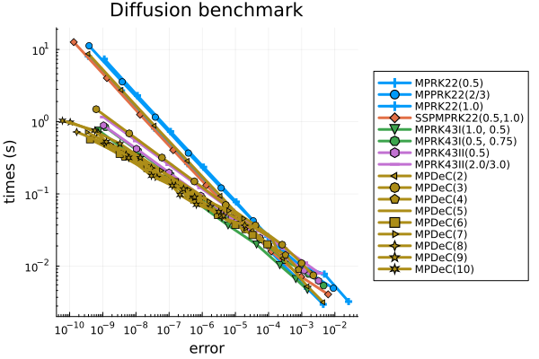
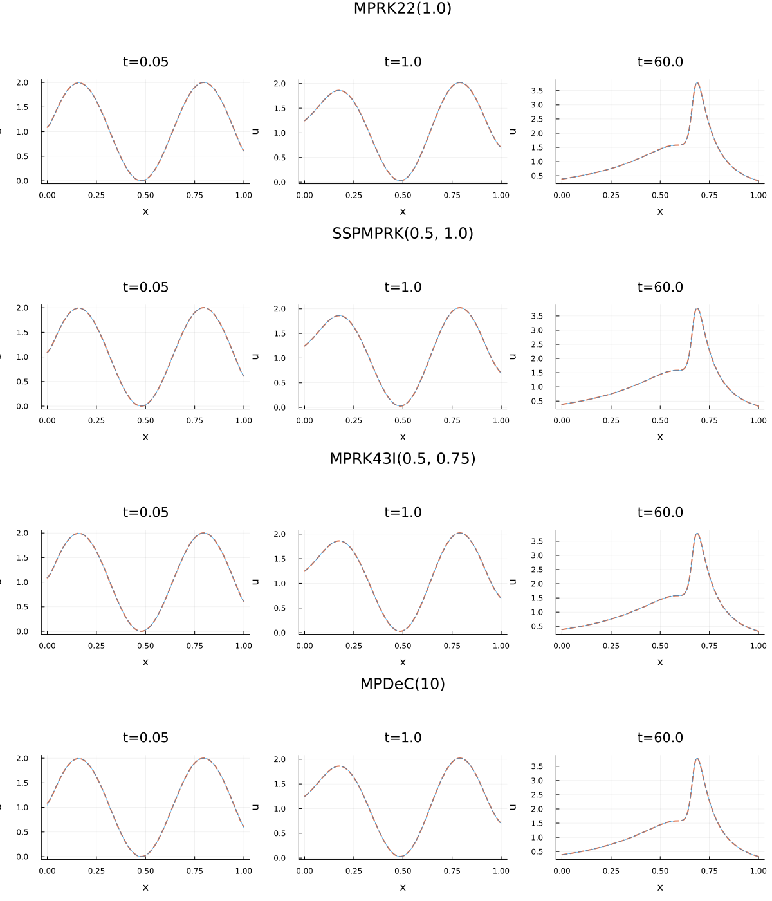
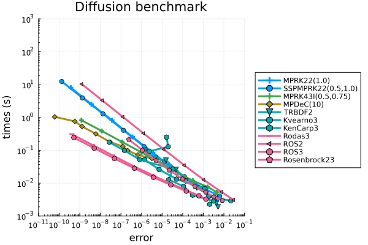
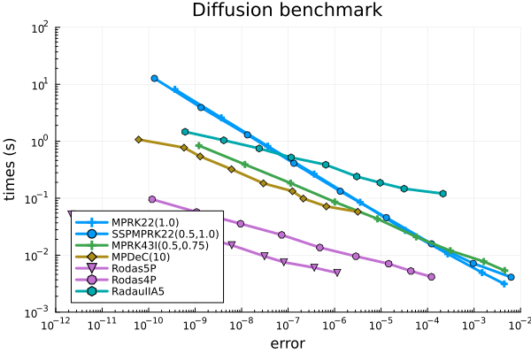
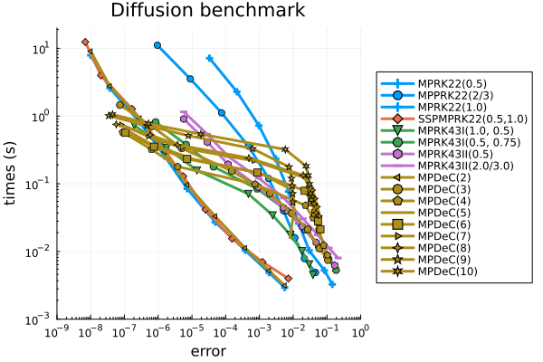
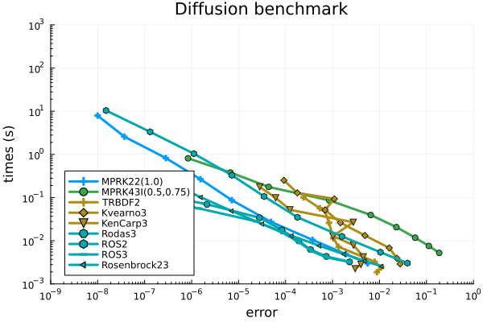
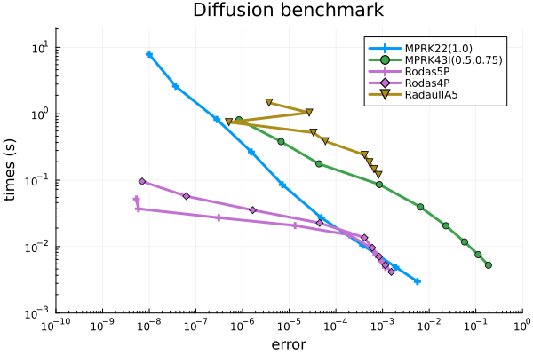

Benchmark: Solution of the Diffusion problem
We consider the test problem prob_pds_diffusion of the spatially heterogeneous diffusion equation to assess the efficiency of different solvers from OrdinaryDiffEq.jl and PositiveIntegrators.jl, especially on larger-scale problems.
using OrdinaryDiffEqFIRK, OrdinaryDiffEqRosenbrock, OrdinaryDiffEqSDIRK
using PositiveIntegrators
# select spatially heterogeneous diffusion problem
prob = prob_pds_diffusionTo keep the following code as clear as possible, we define a helper function diffusion_plot that we use for plotting.
using Plots
function diffusion_plot(sol, ref_sol=nothing, title_str="")
N = length(sol.u[1])
x = range(0.0, 1.0; length=N)
colors = palette(:default)[1:3]'
lbls = ["t=$(sol.t[1])" "t=$(sol.t[2])" "t=$(sol.t[3])"]
if ref_sol !== nothing
p1 = plot(x, ref_sol.u[1], linestyle=:dash, linewidth=2, color=colors[2])
p2 = plot(x, ref_sol.u[2], linestyle=:dash, linewidth=2, color=colors[2])
p3 = plot(x, ref_sol.u[3], linestyle=:dash, linewidth=2, color=colors[2])
else
p1= ()
p2 = ()
p3 = ()
end
plot!(p1, x, sol.u[1], linewidth=0.5, color=colors[1], title=lbls[1])
plot!(p2, x, sol.u[2], linewidth=0.5, color=colors[1], title=lbls[2])
plot!(p3, x, sol.u[3], linewidth=0.5, color=colors[1], title=lbls[3])
p = plot(p1, p2, p3, layout=(1,3), size=(1200,350), plot_title=title_str, xlabel="x", ylabel="u", legend=false)
return p
endWork-Precision diagrams
In the following we show several work-precision diagrams, which compare different methods with respect to computing time and the respective error.
Since the diffusion problem is stiff, we need to use a suited implicit scheme to compute a reference solution, see the solver guide.
# select solver to compute reference solution
alg_ref = RadauIIA5()We use the functions work_precision_adaptive and work_precision_adaptive! to compute the data for the diagrams. Furthermore, the following absolute and relative tolerances are used.
# set absolute and relative tolerances
abstols = 1.0 ./ 10.0 .^ (2:1:10)
reltols = abstols .* 10.0Relative maximum error at the final time
In this section the chosen error is the relative maximum error at the final time $t = 60.0$.
# select relative maximum error at the end of the problem's time span.
compute_error = rel_max_error_tendWe start with a comparison of different adaptive MPRK schemes.
# choose methods to compare
algs = [MPRK22(0.5); MPRK22(2.0 / 3.0); MPRK22(1.0); SSPMPRK22(0.5, 1.0);
MPRK43I(1.0, 0.5); MPRK43I(0.5, 0.75); MPRK43II(0.5); MPRK43II(2.0 / 3.0);
MPDeC(2); MPDeC(3); MPDeC(4); MPDeC(5); MPDeC(6); MPDeC(7); MPDeC(8); MPDeC(9); MPDeC(10)]
labels = ["MPRK22(0.5)"; "MPPRK22(2/3)"; "MPRK22(1.0)"; "SSPMPRK22(0.5,1.0)";
"MPRK43I(1.0, 0.5)"; "MPRK43I(0.5, 0.75)"; "MPRK43II(0.5)"; "MPRK43II(2.0/3.0)";
"MPDeC(2)"; "MPDeC(3)"; "MPDeC(4)"; "MPDeC(5)"; "MPDeC(6)"; "MPDeC(7)"; "MPDeC(8)"; "MPDeC(9)"; "MPDeC(10)"]
# compute work-precision data
wp = work_precision_adaptive(prob, algs, labels, abstols, reltols, alg_ref;
adaptive_ref = true, compute_error)
# plot work-precision diagram
plot(wp, labels; title = "Diffusion benchmark", legend = :outerright,
color = permutedims([
repeat([1], 3)..., 2, repeat([3], 2)..., repeat([4], 2)..., repeat([5], 9)... ]),
xlims = (4*10^-11, 5*10^-2), xticks = 10.0 .^ (-10:1:-2),
ylims = (2*10^-3, 2*10^1), yticks = 10.0 .^ (-3:1:1), minorticks = 10)
For comparisons with other schemes we choose MPRK22(1.0), SSPMPRK22(0.5, 1.0), MPRK43I(0.5, 0.75) and MPDeC(10).
# compute reference solution for plotting
saveat = (0.05, 1.0, 60.0)
ref_sol = solve(prob, RadauIIA5(); abstol = 1e-14, reltol = 1e-13, saveat=saveat);
# compute solutions with loose tolerances
abstol = 1e-2
reltol = 1e-1
sol_MPRK22_1 = solve(prob, MPRK22(1.0); abstol, reltol, saveat=saveat)
sol_SSPMPRK22 = solve(prob, SSPMPRK22(0.5, 1.0); abstol, reltol, saveat=saveat)
sol_MPRK43 = solve(prob, MPRK43I(0.5, 0.75); abstol, reltol, saveat=saveat)
sol_MPDeC10 = solve(prob, MPDeC(10); abstol, reltol, saveat=saveat)
p1 = diffusion_plot(sol_MPRK22_1, ref_sol, "MPRK22(1.0)");
p2 = diffusion_plot(sol_SSPMPRK22, ref_sol, "SSPMPRK(0.5, 1.0)");
p3 = diffusion_plot(sol_MPRK43, ref_sol, "MPRK43I(0.5, 0.75)");
p4 = diffusion_plot(sol_MPDeC10, ref_sol, "MPDeC(10)");
plot(p1, p2, p3, p4, layout=(4,1), size=(1200, 1400))
Next, we compare these four schemes with a selection of second- and third-order stiff solvers from OrdinaryDiffEq.jl. Due to the special structure of the problem, which involves tridiagonal matrices, the classical solvers become inefficient when applied to the PDS formulation. Therefore, for these solvers we instead solve the problem in its original form directly.
# set the problem for the classical solvers
prob_classic = prob_ode_diffusion
# select reference MPRK methods
algs1 = [MPRK22(1.0); SSPMPRK22(0.5, 1.0); MPRK43I(0.5, 0.75); MPDeC(10)]
labels1 = ["MPRK22(1.0)"; "SSPMPRK22(0.5,1.0)"; "MPRK43I(0.5,0.75)"; "MPDeC(10)"]
# select methods from OrdinaryDiffEq
algs2 = [TRBDF2(); Kvaerno3(); KenCarp3(); Rodas3(); ROS2(); ROS3(); Rosenbrock23()]
labels2 = ["TRBDF2"; "Kvearno3"; "KenCarp3"; "Rodas3"; "ROS2"; "ROS3"; "Rosenbrock23"]
# compute work-precision data
wp = work_precision_adaptive(prob, algs1, labels1, abstols, reltols, alg_ref;
adaptive_ref = true, compute_error)
# add work-precision data
work_precision_adaptive!(wp, prob_classic, algs2, labels2, abstols, reltols, alg_ref;
adaptive_ref = true, compute_error)
# plot work-precision diagram
plot(wp, [labels1; labels2]; title = "Diffusion benchmark", legend = :outerright,
color = permutedims([repeat([1], 2)..., 3, 5, repeat([6], 3)..., repeat([7], 4)...]),
xlims = (10^-11, 10^-1), xticks = 10.0 .^ (-11:1:-1),
ylims = (10^-3, 10^3), yticks = 10.0 .^ (-3:1:3), minorticks = 10)
In addition, we compare the selected MPRK schemes to some recommended solvers of higher order from OrdinaryDiffEq.jl.
algs3 = [Rodas5P(); Rodas4P(); RadauIIA5()]
labels3 = ["Rodas5P"; "Rodas4P"; "RadauIIA5"]
# compute work-precision data
wp = work_precision_adaptive(prob, algs1, labels1, abstols, reltols, alg_ref;
adaptive_ref = true, compute_error)
# add work-precision data with isoutofdomain = isnegative
work_precision_adaptive!(wp, prob_classic, algs3, labels3, abstols, reltols, alg_ref;
adaptive_ref = true, compute_error)
# plot work-precision diagram
plot(wp, [labels1; labels3]; title = "Diffusion benchmark", legend = :bottomleft,
color = permutedims([repeat([1],2)..., 3, 5, repeat([4], 2)..., 6]),
xlims = (10^-12, 10^-2), xticks = 10.0 .^ (-12:1:-2),
ylims = (10^-3, 10^2), yticks = 10.0 .^ (-3:1:2), minorticks = 10)
Relative maximum error over all time steps
In this section we do not compare the relative maximum errors at the final time $t = 60.0}$, but the relative maximum errors over all time steps.
# select relative maximum error at the end of the problem's time span.
compute_error = rel_max_error_overallFirst, we compare different MPRK schemes.
# compute work-precision data
wp = work_precision_adaptive(prob, algs, labels, abstols, reltols, alg_ref;
adaptive_ref = true, compute_error)
# plot work-precision diagram
plot(wp, labels; title = "Diffusion benchmark", legend = :outerright,
color = permutedims([repeat([1], 3)..., 2, repeat([3], 2)..., repeat([4], 2)..., repeat([5], 9)... ]),
xlims = (10^-9, 10^0), xticks = 10.0 .^ (-9:1:2),
ylims = (10^-3, 2*10^1), yticks = 10.0 .^ (-3:1:1), minorticks = 10)
We choose the second-order scheme MPRK22(1.0) and the third-order scheme MPRK43I(0.5, 0.75) for comparison with solvers from OrdinaryDiffEq.jl.
# select reference MPRK methods
algs1 = [MPRK22(1.0); MPRK43I(0.5, 0.75)]
labels1 = ["MPRK22(1.0)"; "MPRK43I(0.5,0.75)"]
# compute work-precision data
wp = work_precision_adaptive(prob, algs1, labels1, abstols, reltols, alg_ref;
adaptive_ref = true, compute_error)
# add work-precision data with isoutofdomain = isnegative
work_precision_adaptive!(wp, prob_classic, algs2, labels2, abstols, reltols, alg_ref; adaptive_ref = true, compute_error)
# plot work-precision diagram
plot(wp, [labels1; labels2]; title = "Diffusion benchmark", legend = :bottomleft,
color = permutedims([1, 3, repeat([5], 3)..., repeat([6], 4)...]),
xlims = (10^-9, 10^0), xticks = 10.0 .^ (-9:1:3),
ylims = (10^-3, 10^3), yticks = 10.0 .^ (-3:1:3), minorticks = 10)
Finally, we compare MPRK43I(0.5, 0.75) and MPRK22(1.0) to recommended solvers of higher order from OrdinaryDiffEq.jl.
# compute work-precision data
wp = work_precision_adaptive(prob, algs1, labels1, abstols, reltols, alg_ref;
adaptive_ref = true, compute_error)
# add work-precision data with isoutofdomain = isnegative
work_precision_adaptive!(wp, prob_classic, algs3, labels3, abstols, reltols, alg_ref;adaptive_ref = true, compute_error)
# plot work-precision diagram
plot(wp, [labels1; labels3]; title = "Diffusion benchmark", legend = :topright,
color = permutedims([1, 3, repeat([4], 2)..., 5]),
xlims = (10^-10, 10^0), xticks = 10.0 .^ (-10:1:0),
ylims = (10^-3, 2*10^1), yticks = 10.0 .^ (-3:1:1), minorticks = 10)
Package versions
These results were obtained using the following versions.
using InteractiveUtils
versioninfo()
println()
using Pkg
Pkg.status(["PositiveIntegrators", "StaticArrays", "LinearSolve",
"OrdinaryDiffEqFIRK", "OrdinaryDiffEqRosenbrock",
"OrdinaryDiffEqSDIRK"],
mode=PKGMODE_MANIFEST)Julia Version 1.12.6
Commit 15346901f00 (2026-04-09 19:20 UTC)
Build Info:
Official https://julialang.org release
Platform Info:
OS: Linux (x86_64-linux-gnu)
CPU: 4 × AMD EPYC 9V74 80-Core Processor
WORD_SIZE: 64
LLVM: libLLVM-18.1.7 (ORCJIT, znver4)
GC: Built with stock GC
Threads: 1 default, 1 interactive, 1 GC (on 4 virtual cores)
Environment:
JULIA_PKG_SERVER_REGISTRY_PREFERENCE = eager
Status `~/work/PositiveIntegrators.jl/PositiveIntegrators.jl/docs/Manifest.toml`
[7ed4a6bd] LinearSolve v3.75.0
⌃ [5960d6e9] OrdinaryDiffEqFIRK v1.24.0
⌃ [43230ef6] OrdinaryDiffEqRosenbrock v1.27.0
⌃ [2d112036] OrdinaryDiffEqSDIRK v1.13.0
[d1b20bf0] PositiveIntegrators v0.2.17-DEV `~/work/PositiveIntegrators.jl/PositiveIntegrators.jl`
[90137ffa] StaticArrays v1.9.18
Info Packages marked with ⌃ have new versions available and may be upgradable.